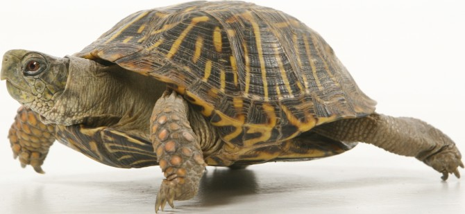
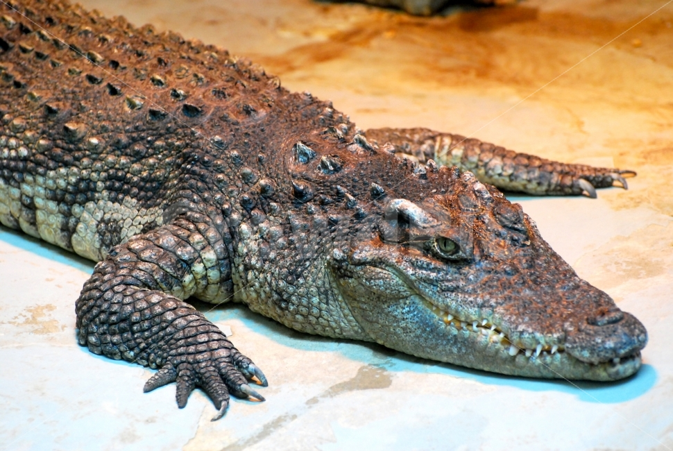

파충류
파충류(Reptilia, 爬蟲類)는 용궁류(Sauropsida) 파충강에 속하는 척추동물이다. 린네식 분류법으로 파충류로 분류 되는 동물들을 뜻하며, 공기로 호흡하고, "냉혈(Cold-Blooded)" 물질대사를 하고, 딱딱한 껍질을 갖고 양막(羊膜, amnion, a kind of membrane)을 지닌 알을 낳는다.{태생을 할 경우에도 비슷한 막(membrane)이라는 시스템을 유지한다.}. 피부는 비늘과 껍질로 이루어져있다. 네개의 다리를 지니거나 네발을 지닌 선조에서 유래한 네발동물(영어: Tetrapod)이며, 배(胚, embryo)가 양막이란 막(membrae)에 의해 둘러쌓인 구조인 양막형 알(amniotic eggs)을 낳는다. 현재의 파충류들은 남극을 제외한 모든 대륙에 분포하며, 네 개의 목(order)으로 분류된다. 최근에는 조강과 함께 용궁류의 분기군(Clade)으로 들어간다. 그러나 일반적인 의미의 파충류는 조강을 제외하고, 거북목을 포함한다.
| 거북이 |  |
| 악어 |  |